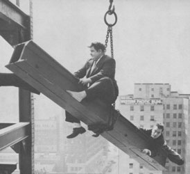
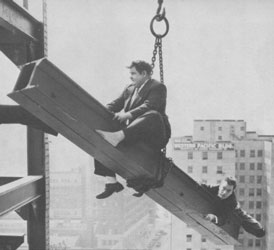

mechanism
mechanism  radical
art homepage
radical
art homepage
hoist
 |
|
|
|
|
|
mechanism
hoist

Oliver Hardy & Stan Laurel in Liberty
by Leo McCarey & Stan Laurel, 1929
Aufstellen der Friedrich Engels Skulptur. (East-Berlin, 1986.)
[Photo: Sibylle Bergemann]
Removal of Lenin's Statue by the Lithuanian
Government. (Vilnius, 1991.)
Removal of General Alexandre Petion's statue by the
Gonaives Resistance Front. (Gonaives, Haiti, 2004.)
Removal of Stalin's statue by the Georgian Government
under Mikheil Saakashvili. (Gori, 2010.)